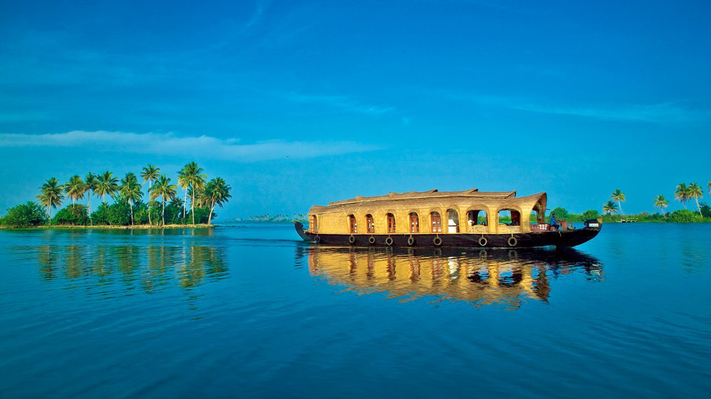
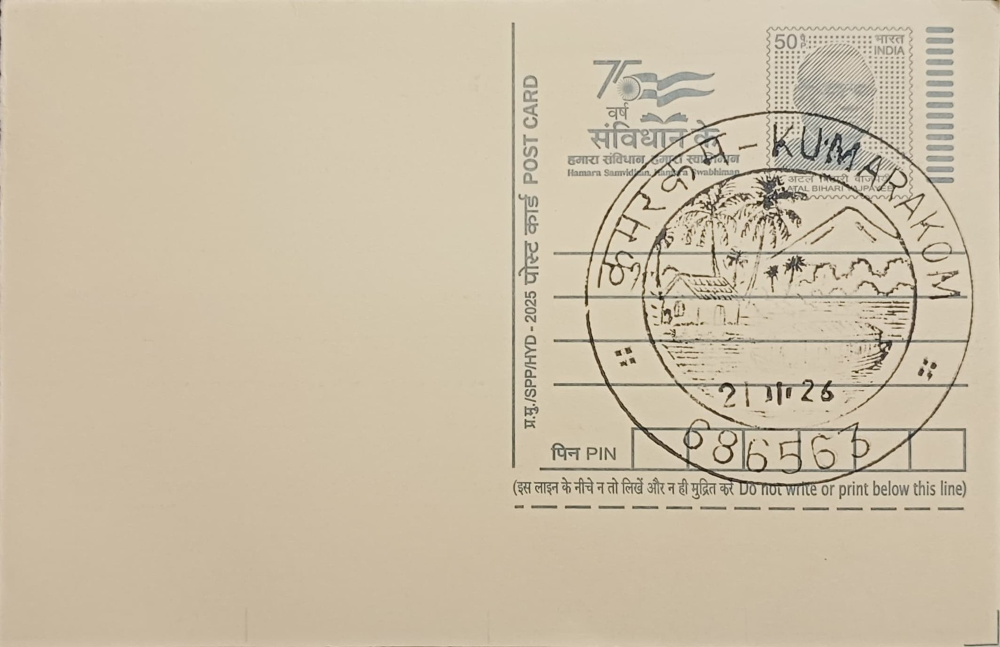
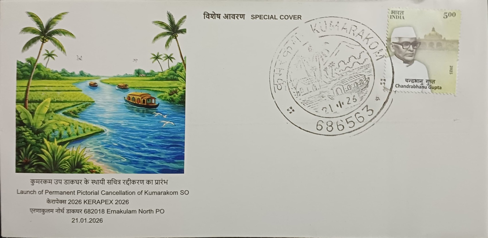
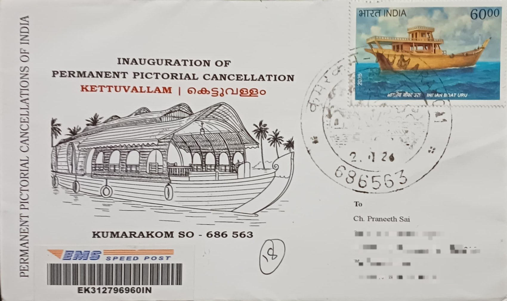
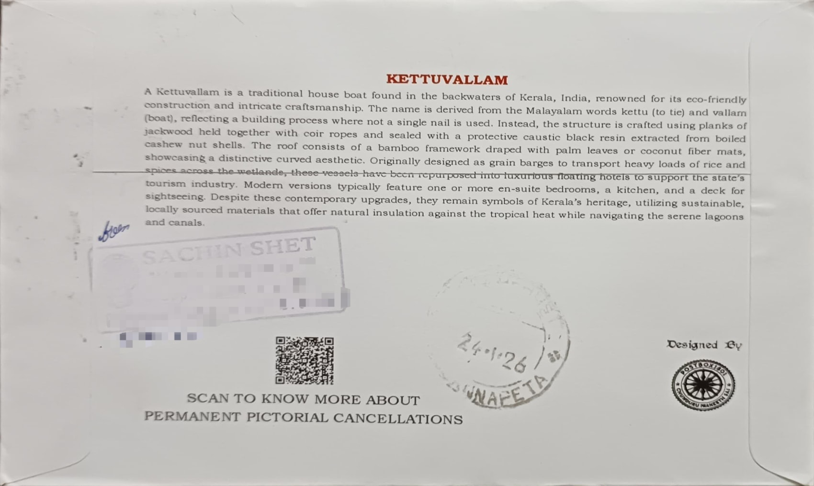

Nestled on the serene banks of Vembanad Lake, the largest freshwater lake in Kerala, Kumarakom is a labyrinthine network of interconnected canals and lagoons. This sprawling backwater system serves as an ecological sanctuary, where the interplay between land and water creates a unique, amphibious landscape. The region is characterized by its emerald-green horizons, fringed by swaying coconut palms and dense mangrove forests. These waters are not merely a scenic backdrop but the very pulse of the region, housing a rich biodiversity that includes rare migratory species like the Siberian crane, which frequents the 14-acre Kumarakom Bird Sanctuary nearby.
The quintessential symbol of these backwaters is the traditional wooden houseboat, known locally as the Kettuvallam. These vessels are masterpieces of indigenous craftsmanship, traditionally constructed without the use of a single iron nail. Instead, massive planks of Anjili (Jackwood) are meticulously joined together using coir ropes made from coconut fiber. The wood is treated with a protective coating of caustic black resin derived from boiled cashew kernels, ensuring durability for generations. While they were once used as heavy-duty cargo boats to transport up to 30 tons of rice and spices across the state, they have since been reimagined as floating retreats that blend rustic heritage with modern luxury.
A journey aboard a Kettuvallam offers an immersive experience that seems to suspend time. As the boat glides at a leisurely pace through narrow, palm-canopied canals, passengers are treated to a panoramic view of rural Kerala life. The experience is defined by its tranquility; the only sounds are the gentle rhythmic lapping of the water against the hull and the distant calls of kingfishers and herons. Onboard, the hospitality is deeply rooted in local tradition, with seasoned crews preparing authentic Kuttanadan meals—such as Pearl Spot fish (Karimeen) and spicy prawns—sourced directly from the surrounding waters and cooked in the boat's compact kitchen.
The local community in Kumarakom shares an inseparable bond with these waterways, relying on them for both survival and identity. For centuries, the backwaters have served as the primary transport system for people and goods in an area where roads were once non-existent. Today, this dependency continues through fishing, shell mining, and coir-making, but it has expanded significantly into the realm of Responsible Tourism. The village has become a global model for this initiative, where locals are active stakeholders rather than bystanders. Residents serve as guides, boat operators, and suppliers, ensuring that the economic benefits of tourism directly support the preservation of their traditional way of life and the fragile wetland ecosystem.
Beyond the leisure of the cruise, the backwaters represent a delicate environmental balance that protects the inland from flooding while replenishing the groundwater. The region’s geography is further defined by the Thanneermukkom Bund, a massive salt-water regulator that divides the lake into fresh and brackish zones, influencing the types of flora and fauna found in each half. Whether it is the spectacle of the Nehru Trophy Boat Race or the quiet daily commute of a schoolchild in a small wooden canoe, the backwaters of Kumarakom remain a living testament to a culture that has flourished in perfect harmony with nature for millennia.

Official Inaugural Cover by India Post

Travelled Private Cover Front

Travelled Private Cover Back
| Date of Introduction | January 21, 2026 |
|---|---|
| Address | Sub Postmaster, |
| Kumarakom SO, | |
| Kottayam (dt.), Kerala - 686563. |